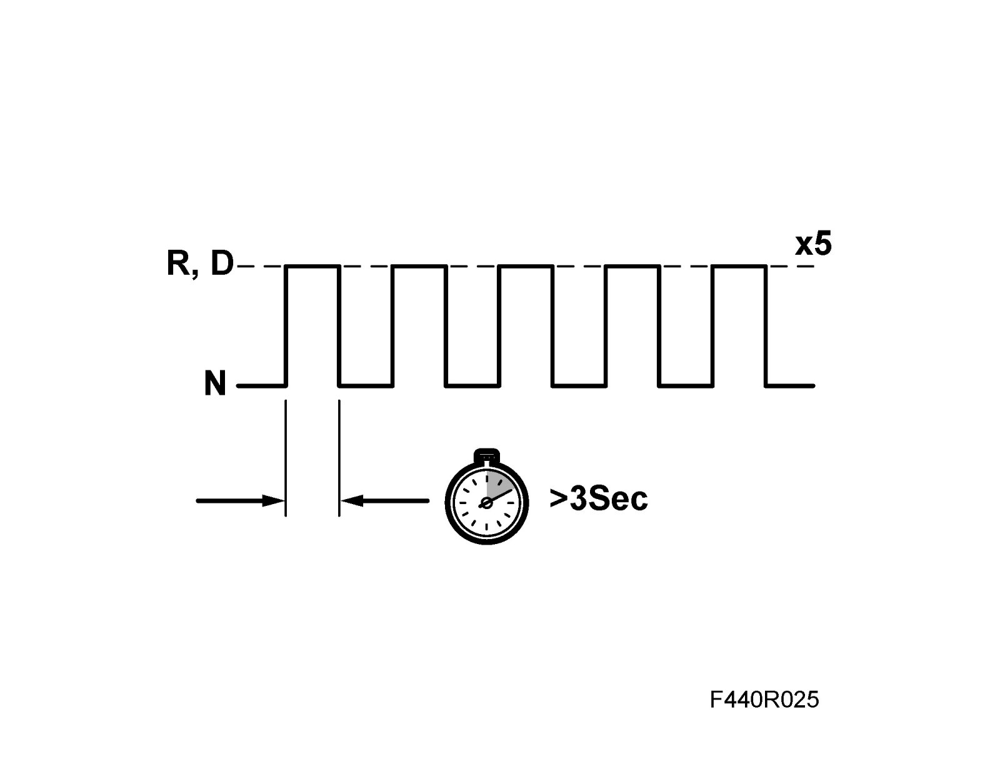
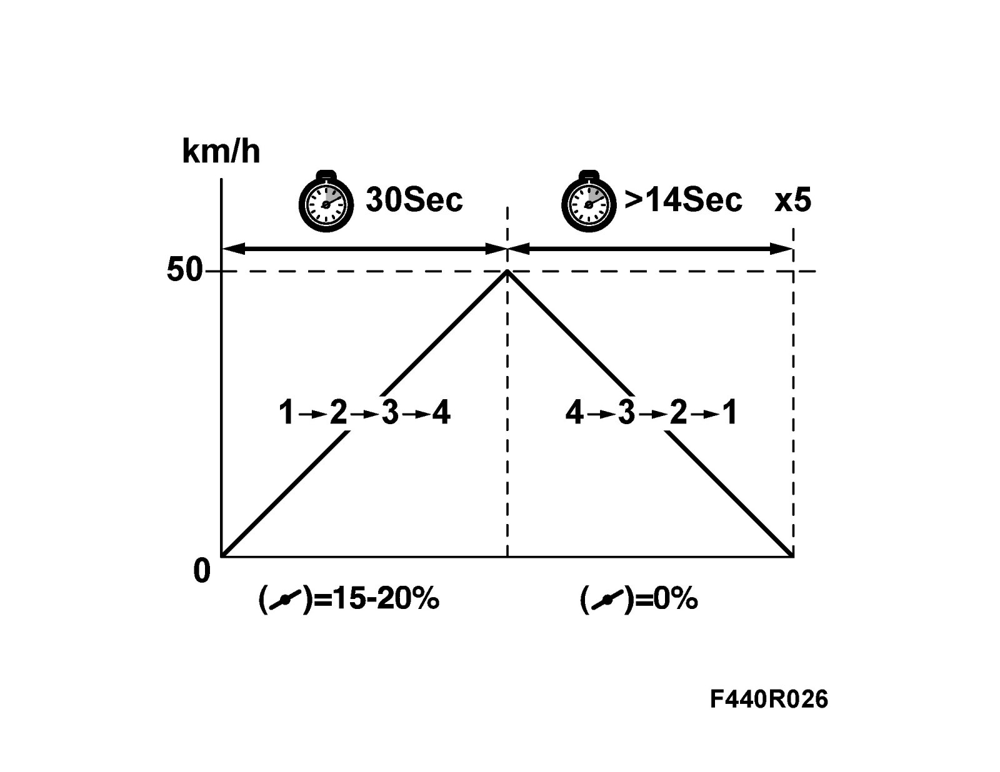
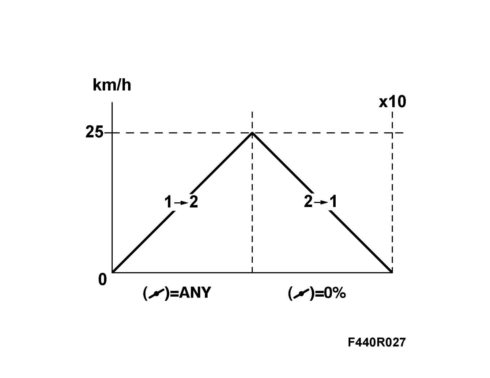

Programming and Relearning
Adaptation, resettingAdjustment
After changing or updating automatic transmission, TCM or software, the old adaptation data must be removed and a new adaptation performed as described below.
Note
Zeroing adaptation has taken place automatically if "Add" has been executed in Tech 2.
1. Reset adaptation using Tech 2 by adapting the values at Automatic transmission - Adjustments - Reset.
2. Operate the transmission to working temperature (65 - 110°C). Read from Tech 2 menu "Read values" TCM.
Important
The automatic gearbox must not be warmed up by a stall test.
Note
Adaptation can be carried out only when the transmission has attained working temperature.
3. Adaptation for shifting N-D and N-R is carried out with the handbrake applied. If the procedure is done in the workshop, connect an exhaust ventilator, start the car and run at idling speed. Shift from N to R. Keep R engaged for more than three seconds, then shift back to N. Repeat the procedure 5 times. Then shift from N to D the same as above, repeating the steps 5 times.

4. Adaptation for shifting up and down is done by driving on a road. Engage D and accelerate up to just over 50 km/h with the accelerator pedal at a constant position (approx. 15 - 20% depressed) until 4th gear has engaged. Brake until the car is stopped. Acceleration up to 50 km/h must take more than 30 sec. and braking must take more than 14 sec. Repeat the above 5 times.

5. Adaptation for manual shifting from 2nd to 1st gear is carried out on-road. Engage M2 with the selector lever. Accelerate to 25 km/h. Engage M1 and brake smoothly until the car is stationary. Repeat this procedure 10 times.

6. Check that adaptation has had the desired effect and that shifting performance has improved.